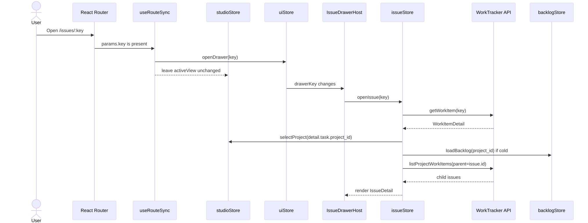
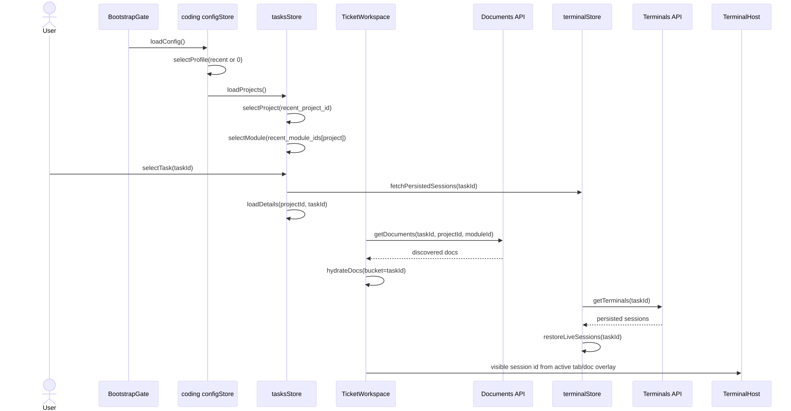

Short Answer
There are two separate selection models in the same React app.
URL drives shell selection
useRouteSync writes studioStore.activeView, studioStore.selectedProjectId, and uiStore.drawerKey. The drawer then loads its own issueStore.open.
Bootstrap drives workspace selection
BootstrapGate resolves a profile, then tasksStore owns selected project, module, and task. TicketWorkspace reads that selected task as the tab bucket.
The drawer should not become coding
The drawer can be issue-id-first. It should resolve docs/runs for that issue without forcing the broader coding project/module selection to move.
Clickable Store Map
Click a store to see what it owns and what it does not own. Solid edges are direct writes or render reads; dashed edges are derived or side-effect relationships.
Studio Issue Selection
Opening a Studio drawer is URL-first. It does not select a coding task.
/issues/:key sets uiStore.drawerKey; activeView is deliberately left alone.IssueDrawerHost calls issueStore.openIssue(key).getWorkItem returns the selected work item and attachments.issueStore calls studioStore.selectProject(project_id) and, on cold load, backlogStore.loadBacklog(project_id).listProjectWorkItems(parent=issue.id) fills the drawer's child issue list.Stored after this flow
| Store | Changed fields |
|---|---|
uiStore | drawerKey |
issueStore | open, children, loading/error flags |
studioStore | selectedProjectId, modules; activeView unchanged while drawer route is open |
backlogStore | project items, states, sprints if cold |
tasksStore | No direct change today |
Coding Ticket Selection
The coding surface is self-bootstrapped. Its selected task is the bucket used by docs, terminal tabs, and doc-chat overlays.
BootstrapGate loads config, selects the recent profile, and loads projects.tasksStore.selectProject and selectModule populate modules, tasks, states, and sprints.tasksStore.selectTask(id) sets selectedTaskId, fetches persisted sessions, and loads task details.TicketWorkspace uses bucket selectedTaskId, hydrates docs, and fetches sessions.Stored after this flow
| Store | Changed fields |
|---|---|
configStore | profiles, recentProfileIndex, API key in profile |
tasksStore | selectedProjectId, selectedModuleId, selectedTaskId, tasks/details/sprints |
workspaceStore | per-bucket active, docs, history chips, overlay flags |
terminalStore | sessions, byTaskId, activeByTask, chatByDoc, lifecycle maps |
uiStore | panel layout, focus pane, modal stack |
Component Tree × Data Volume
The render hierarchy of both surfaces, color-dotted by how much store data each component pulls. Click a component to see exactly which stores it reads and at what volume. The two heavy reads to notice: Studio's backlogStore.items (whole project tree) and coding's terminalStore.sessions (every session ever spawned).
| Component | Reads from | Volume | What it actually pulls |
|---|---|---|---|
StudioApp / ContentHost | studioStore | Light | selectedProjectId, activeView — a project id and a view name. |
Project Views | backlogStore, planningFilterStore, selectionStore | Heavy | Full items[], sprints[], states[] for the project. Filters/selection are small. |
IssueDrawerHost | uiStore, issueStore | Light | drawerKey only; calls openIssue(key). |
IssueDetail | issueStore, backlogStore, studioStore | Heavy | One open issue + children[], but walks the full items[] map to resolve epic + blocker chips. |
ChildIssues | props from IssueDetail | Light | children: WorkItem[] — usually a small list. |
BootstrapGate | configStore, tasksStore | Light | One profile from the list; initial project select. |
Nav · Modules · Tasks | tasksStore, uiStore | Medium | projects[], modules[], tasks[] for the selected module + collapse/cursor state. |
TicketWorkspace | tasksStore, workspaceStore, terminalStore | Medium | selectedTaskId bucket + that bucket's tab/doc state + byTaskId[bucket]. |
DetailsTab | tasksStore | Medium | Single task's full details. |
Doc tabs | workspaceStore | Medium | docs[] for the bucket; one persistent iframe per doc. |
Terminal tabs | terminalStore | Medium | byTaskId[bucket] → session-id list. |
TerminalHost | terminalStore, workspaceStore, tasksStore | Heavy | The whole sessions map + byTaskId/activeByTask/chatByDoc routing maps; derives one visibleId. |
For CODIN-703: an issue-scoped drawer should subscribe like the Light nodes — pass an issueId, read issue-scoped slices — and reuse the single mounted TerminalHost rather than pulling the heavy backlogStore.items walk that IssueDetail does today.
Implication For CODIN-703
The parent requirement should not say "make the drawer drive coding selection." It should say "make the drawer an issue-scoped consumer of the same docs/runs/tab primitives."
| Requirement | Why | Boundary |
|---|---|---|
Drawer input is issueId or issue key |
The user wants a quick way to work a ticket, not a second coding app. | The drawer component should not require callers to pass project/module/worktree. |
| Resolution is internal | Project/module/worktree can be resolved by a frontend helper or backend endpoint, but that should be hidden behind an issue-scoped action. | Do not expose coding store bootstrapping as drawer API. |
| Tabs reuse coding behavior | Doc tabs, terminal tabs, dormant chips, history chips, and doc-chat behavior already exist in TicketWorkspace. |
Reuse the model; do not duplicate a parallel drawer-only tab system unless necessary. |
| Selection does not mutate coding background by default | Opening a drawer from another project/module should not visibly repoint the background coding task list. | Shared session identity yes; full coding workspace reconciliation no. |
| Resize follows coding layout semantics | The coding app uses react-resizable-panels and persists panel ratios via its UI store/API. |
Prefer panel-style drag resize and persisted ratios over a one-off width toggle. |
Mermaid Exports
Source .mmd files and rendered SVGs live beside this report.


